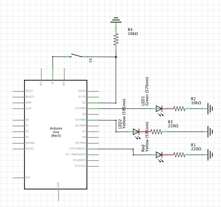

Lights that Fade! (Kinda)
Assignment: Create a circuit using LEDs, a button, a for-loop, digitalWrite(), digitalRead(), and analogWrite()
Image: Circuit
Gif: Circuit Operation

Circuit Schematic

Code
//RESISTORS : button and green LED using 10k resistors, yellow and red LEDs using 220 resistors
//10k used for green led to match brightness to other LEDs
//Array contains pin values for red, yellow, and green LEDs
//These values are placed into an array to facilitate usage of the for loop
//10 - RED, 5 - YELLOW, 3 - GREEN
const int LEDpins[] = {10,5,3};
// the number of the pushbutton pin
const int buttonPin = 2;
//Set brightness values for analogWrite
//Off - no brightness
const int off = 0;
//10 - dimly lit LED
const int lowBrightness = 10;
//255 - almost fully lit LED
const int highBrightness = 200;
//only used in index==3 when red light is flashing///////////
//constant defines the length of one flash //
const int flashLength = 100; //
//variable stores values from millis() of last red flash //
int lastFlash = 0; //
// variable for reading the pushbutton status
int buttonState = 0;
void setup() {
// initialize the pushbutton pin as an input:
pinMode(buttonPin, INPUT);
//loop through values in LEDpins array
for(int i = 0; i < 3; i++){
// initialize each LED pin as an output:
pinMode(LEDpins[i], OUTPUT);
// LEDs start at low brightness
analogWrite(LEDpins[i], lowBrightness);
}
}
//used to translate a pushbutton to a toggle
boolean clicked = false;
//stores state of LEDs
//0= red light, others dim
//1= yellow light, others dim
//2= green light, others dim
//3=flashing red light, other lights off
int index = 3;
//used to toggle flashing red light on/off
boolean flashOn = false;
void loop() {
// read the state of the pushbutton value:
buttonState = digitalRead(buttonPin);
toggleLight(); //checks if button is pushed and changed lighting state
//if index is 3, make red light flash
// millis() is used to create a timer instead of delay() to ensure that all
// button presses are received
if(index==3 && millis() - lastFlash > flashLength) {
blinkingRedLight();
}
}
void toggleLight() {
// check if the pushbutton is pressed. If it is, the buttonState is HIGH:
if (buttonState == HIGH && !clicked) {
//increment light state
index++;
//if out of bounds return to 0
if(index > 3) index = 0;
//If index is 3, handled above. otherwise switch between red-yellow-green
if(index != 3){
//light each of the 3 leds
for(int i = 0; i < 3; i++){
//if the index of that LED matches the current lighting mode, set to HIGH brightness
//otherwise set to LOW brightness
analogWrite(LEDpins[i], (i == index ? highBrightness : lowBrightness));
}
}
//toggle variable keeping track of button clicks
clicked = true;
} else if(clicked){
//reset clicked toggle
clicked = false;
//This delay prevents the button from sending multiple clicks i under 1/5 of a second
//Otherwise button pushes often register as 2 pushes due to button sensitivity
delay(200);
}
}
void blinkingRedLight(){
//store time of last flash
lastFlash = millis();
//turn yellow LED off
digitalWrite(LEDpins[1], LOW);
//turn green LED off
digitalWrite(LEDpins[2], LOW);
//toggle state of red LED using flashOn variable
if(flashOn){ //if red LED is currently on,
digitalWrite(LEDpins[0], LOW); //turn the red LED off
flashOn = false; //and set flash indicator to false
}
else { //otherwise, red LED is off. in this case,
digitalWrite(LEDpins[0], HIGH); //turn red LED on
flashOn = true; //and set flash indicator to true
}
}